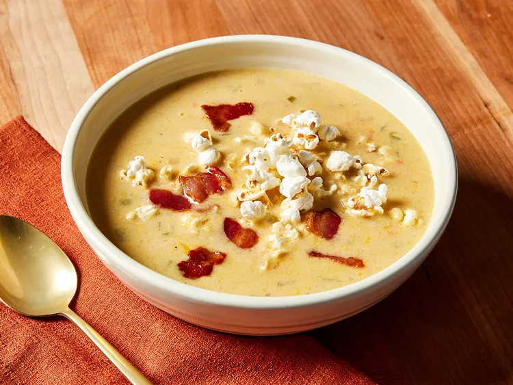

Beer Cheese Soup
Ingredients:
- 4 cups chicken broth
- 1 cup beer (lager or ale works well)
- 2 cups shredded sharp cheddar cheese
- 1 cup shredded mozzarella cheese
- 1/2 cup grated Parmesan cheese
- 1/2 cup all-purpose flour
- 1/2 cup unsalted butter
- 1 cup heavy cream
- 1 small onion, finely chopped
- 2 cloves garlic, minced
- 1 teaspoon Dijon mustard
- 1/2 teaspoon paprika
- Salt and pepper to taste
- Chopped chives or green onions for garnish (optional)
Instructions:
- In a large pot, melt the butter over medium heat. Add the chopped onion and garlic, and sauté until softened, about 5 minutes.
- Sprinkle the flour over the onions and garlic, stirring constantly to form a roux. Cook for about 2 minutes to eliminate the raw flour taste.
- Gradually whisk in the chicken broth and beer, ensuring there are no lumps. Bring the mixture to a simmer and cook until it thickens, about 10 minutes.
- Reduce the heat to low and stir in the shredded cheddar, mozzarella, and Parmesan cheeses until melted and smooth.
- Add the heavy cream, Dijon mustard,
paprika, salt, and pepper. Stir well to combine and heat through, but do not let it boil.
- Adjust seasoning to taste. If the soup is too thick, you can add a little more chicken broth or beer to reach your desired consistency.
- Serve hot, garnished with chopped chives or green onions if desired. Enjoy!
Back